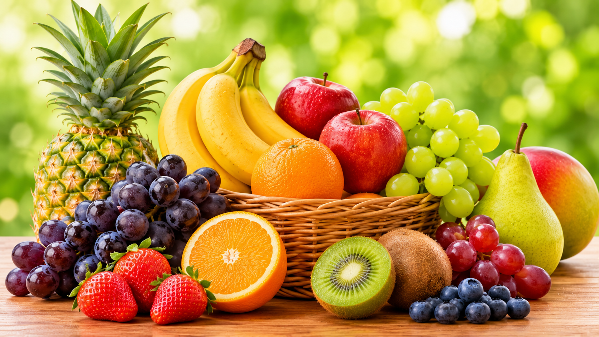
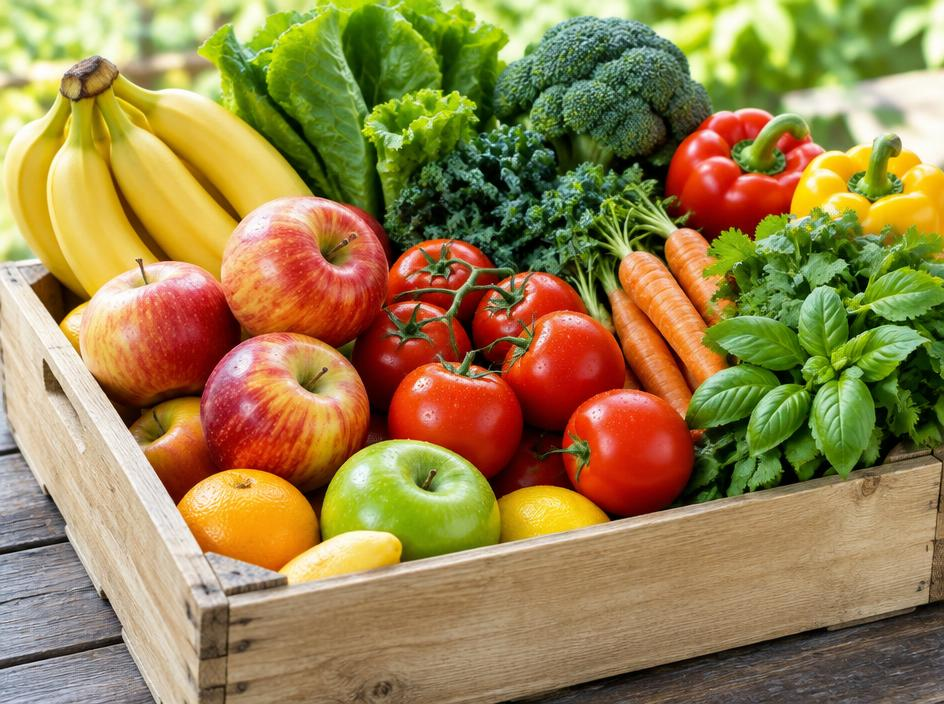

Compassion
Every meal shared brings hope to someone in need.
FoodConnect links restaurants, households and event organisers with NGOs and volunteers — so good food reaches people, not landfills.
Every meal shared brings hope to someone in need.
Turning food waste into a resource for a better tomorrow.
Together, we turn surplus food into shared impact.
Making food redistribution simple and accessible to everyone.


Nearly a third of all food produced is wasted while millions go hungry. FoodConnect is a simple, trusted digital bridge that helps communities collect, manage and distribute surplus food in real time.
Making food redistribution simple, transparent and reliable.
Donors add surplus food details, quantity and pickup time.
Nearby NGOs get notified about available food donations.
Volunteers collect and deliver food within the freshness window.
Food reaches families and the impact is recorded live.
One surplus meal can make someone's day. Become part of the change.